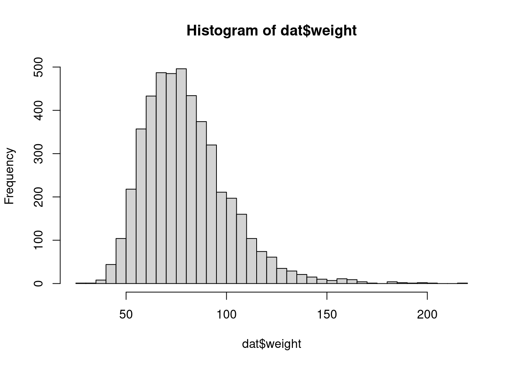
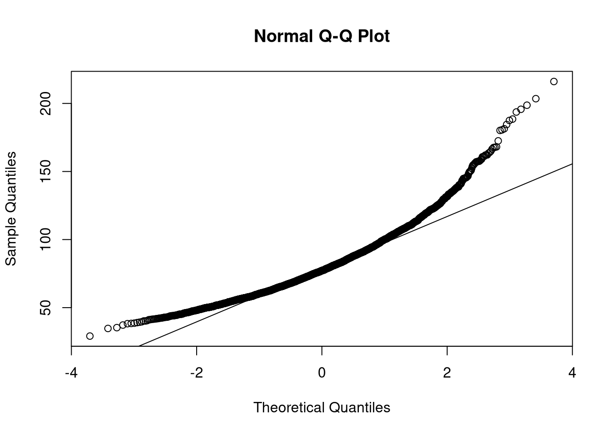
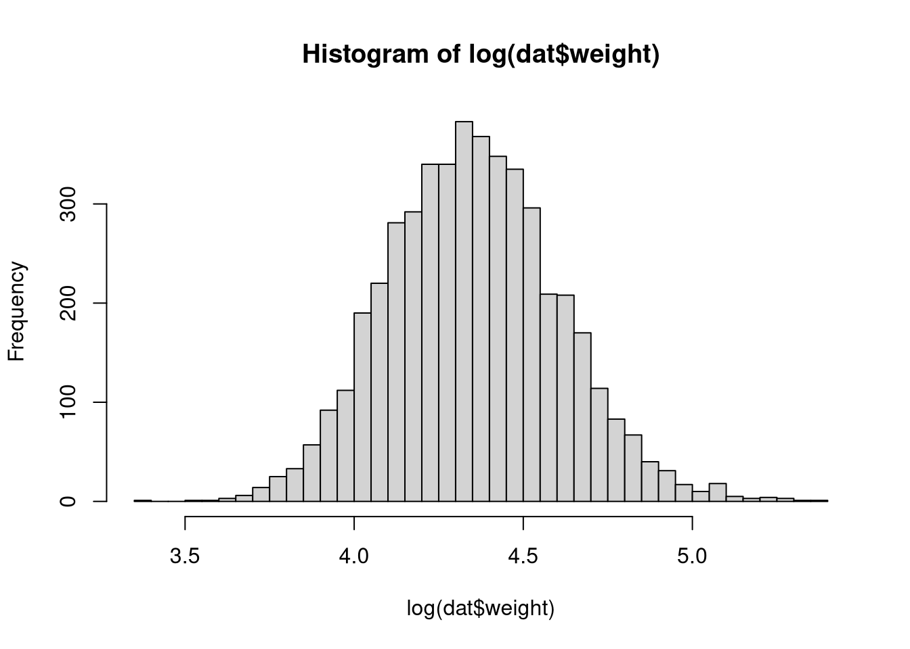
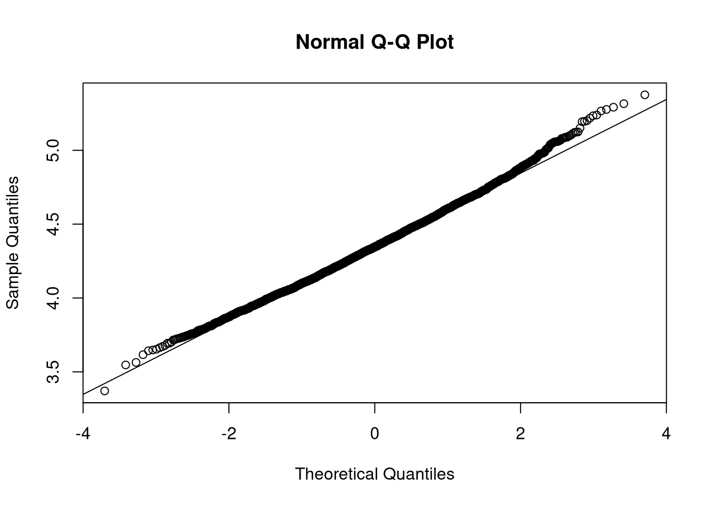

dat <- read.csv("NHANES1.csv")
# make factors
integer_info <- sapply(dat, is.integer)
integer_info[which(names(integer_info) == "age")] <- FALSE # age should stay an integer
dat[integer_info] <- lapply(dat[integer_info], as.factor)Exercise 4: Solutions fourth part
Load the data in R.
Task 4.1
Is the variance the same for males and females? Perform an appropriate test. What is the null hypothesis?
var.test(dat$height[dat$male], dat$height[!dat$male])
F test to compare two variances
data: dat$height[dat$male] and dat$height[!dat$male]
F = 1.1147, num df = 2352, denom df = 2367, p-value = 0.00838
alternative hypothesis: true ratio of variances is not equal to 1
95 percent confidence interval:
1.028257 1.208407
sample estimates:
ratio of variances
1.114693 Task 4.2
Which test can we use, if, instead, we want to check if males are on average taller than females? Set an adequate alternative hypothesis.
t.test(dat$height[dat$male], dat$height[!dat$male], alternative='greater')
Welch Two Sample t-test
data: dat$height[dat$male] and dat$height[!dat$male]
t = 61.102, df = 4701.7, p-value < 2.2e-16
alternative hypothesis: true difference in means is greater than 0
95 percent confidence interval:
12.96329 Inf
sample estimates:
mean of x mean of y
173.9717 160.6497 Task 4.3
Analyze the confidence interval obtained in the previous point. Why doesn’t it have an upper bound?
ci <- t.test(dat$height[dat$male], dat$height[!dat$male], alternative='greater')
ci$conf.int[1] 12.96329 Inf
attr(,"conf.level")
[1] 0.95Task 4.4
Now look at the distribution of the variable weight: can we graphically state its normality? Perform a transformation in order to recover it.
hist(dat$weight,breaks=50)
qqnorm(dat$weight)
qqline(dat$weight)
hist(log(dat$weight),breaks=50)
qqnorm(log(dat$weight))
qqline(log(dat$weight))
Task 4.5
Test if the mean of the variable weight is 80 kg, testing \(H_0: log(weight) = log(80)\) versus \(H_1: log(weight) \neq log(80)\). Can you state an interval estimate with a level of 0.99?
t.test(log(dat$weight),mu=log(80))
One Sample t-test
data: log(dat$weight)
t = -8.1594, df = 4721, p-value = 4.277e-16
alternative hypothesis: true mean is not equal to 4.382027
95 percent confidence interval:
4.344784 4.359213
sample estimates:
mean of x
4.351998 Task 4.6
Provide a punctual and an interval estimate for the prevalence of heart diseases and lung pathology.
prop.test(table(!dat$heartdis_ever))
1-sample proportions test with continuity correction
data: table(!dat$heartdis_ever), null probability 0.5
X-squared = 3359.6, df = 1, p-value < 2.2e-16
alternative hypothesis: true p is not equal to 0.5
95 percent confidence interval:
0.07042734 0.08594290
sample estimates:
p
0.07783669 prop.test(table(!dat$lungpath_ever))
1-sample proportions test with continuity correction
data: table(!dat$lungpath_ever), null probability 0.5
X-squared = 3562.7, df = 1, p-value < 2.2e-16
alternative hypothesis: true p is not equal to 0.5
95 percent confidence interval:
0.05882014 0.07316893
sample estimates:
p
0.06563625 Task 4.7
Test if the prevalence is statistically different between men and women.
table(dat$male,dat$heartdis_ever)
FALSE TRUE
FALSE 2212 170
TRUE 2136 197prop.test(table(dat$male,!dat$heartdis_ever))
2-sample test for equality of proportions with continuity correction
data: table(dat$male, !dat$heartdis_ever)
X-squared = 2.6267, df = 1, p-value = 0.1051
alternative hypothesis: two.sided
95 percent confidence interval:
-0.028799184 0.002655111
sample estimates:
prop 1 prop 2
0.07136860 0.08444063 chisq.test(table(dat$male, dat$heartdis_ever))
Pearson's Chi-squared test with Yates' continuity correction
data: table(dat$male, dat$heartdis_ever)
X-squared = 2.6267, df = 1, p-value = 0.1051Task 4.8
Turn the variable smokstat into a binary variable (put the non-smokers and the people who almost never smoked into one group).
table(dat$smokstat)
1 2 3
1089 162 788 smoke_bin <- NULL
smoke_bin[dat$smokstat == 1 | dat$smokstat == 2] <- 0
smoke_bin[dat$smokstat == 3] <- 1
smoke_bin <- as.factor(smoke_bin)
dat$smoke_bin <- smoke_bin
table(smoke_bin)smoke_bin
0 1
1251 788 Task 4.9
Do you expect smokers to have a higher cancer prevalence than non-smokers? Test if there is a significant difference in cancer prevalence between smokers and non-smokers (using the variable from before). If so, which group has a higher prevalence? Did you get the result you expected?
(tab <- table(dat$smoke_bin, dat$cancer_ever))
FALSE TRUE
0 1080 171
1 740 46prop.table(tab, margin = 1) # normalize by first margins to 1
FALSE TRUE
0 0.86330935 0.13669065
1 0.94147583 0.05852417prop.test(table(dat$smoke_bin, !dat$cancer_ever))
2-sample test for equality of proportions with continuity correction
data: table(dat$smoke_bin, !dat$cancer_ever)
X-squared = 30.171, df = 1, p-value = 3.955e-08
alternative hypothesis: two.sided
95 percent confidence interval:
0.05199798 0.10433497
sample estimates:
prop 1 prop 2
0.13669065 0.05852417 Task 4.10
Do the same test in the subgroup of people who are between 20 and 49 years old. What do you see now? How can you explain the results?
table(dat$smoke_bin[dat$age < 50], !dat$cancer_ever[dat$age < 50])
FALSE TRUE
0 9 417
1 14 443prop.test(table(dat$smoke_bin[dat$age < 50], !dat$cancer_ever[dat$age < 50]))
2-sample test for equality of proportions with continuity correction
data: table(dat$smoke_bin[dat$age < 50], !dat$cancer_ever[dat$age < 50])
X-squared = 0.45555, df = 1, p-value = 0.4997
alternative hypothesis: two.sided
95 percent confidence interval:
-0.03265876 0.01364314
sample estimates:
prop 1 prop 2
0.02112676 0.03063457